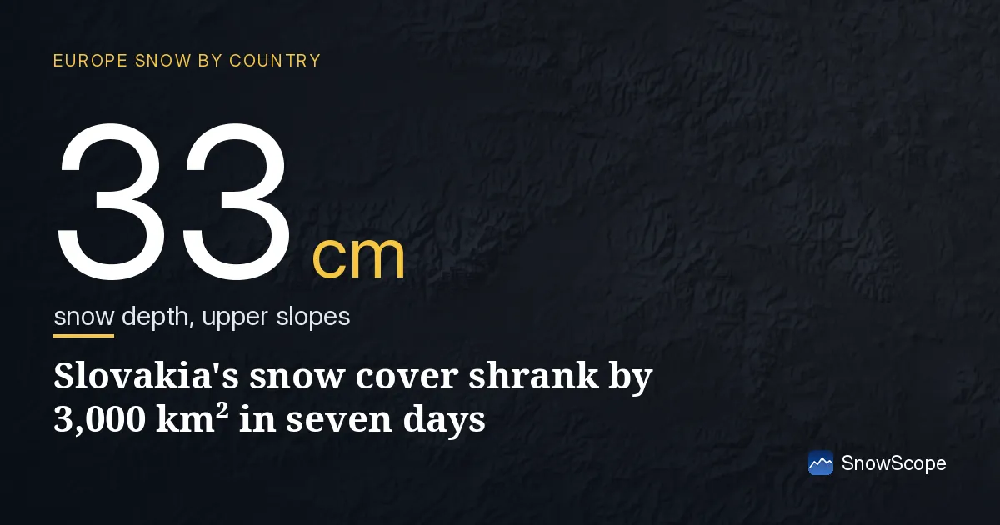

Slovakia's snow cover shrank by 3,000 km² in seven days
Slovakia's snow-covered area dropped from 4,640 km² seven days ago to just 1,660 km² today—a loss of 2,980 km². The melt happened across the country, but high mountains above 1,500 m still have good cover, and new snow in the High Tatras over the past three days has helped the leading resorts.
See the live snow forecast for Vysoké Tatry in the SnowScope appSnow depth, powder alerts and the 3D map, free.
A week of rapid shrinkage
The past seven days have been tough for snow in Slovakia. We mapped 4,640 km² of cover on 14 November; today that figure stands at 1,660 km², a retreat of nearly two-thirds. Yesterday alone, the covered area fell by 350 km². Our snow model shows that this week the country moved from 24 percent white to just 9 percent white.
The loss was not uniform. We saw snow-covered area peak at 2,340 km² on 17 November, then drop sharply. This kind of fluctuation is normal in early season: a thaw event, followed by patchy new snow, can erase gains quickly.
| Day | White area | Most new snow in 3 days | Deepest resort |
|---|---|---|---|
| Monday 16 November | 2,020 km² | 1 cm | Ski centrum Dedinky |
| Tuesday 17 November | 2,340 km² | 7 cm | Ski centrum Dedinky |
| Wednesday 18 November | 1,840 km² | 9 cm | Ski centrum Dedinky |
| Thursday 19 November | 2,010 km² | 16 cm | Vysoké Tatry |
| Friday 20 November | 1,660 km² | 13 cm | Vysoké Tatry |

Where snow still lies
The survival story is in altitude. Below 1,000 m, snow is almost absent—3 percent cover, 0 cm mean depth. Between 1,000 and 1,500 m, only 37 percent of the terrain is white, with an average of just 1 cm. Above 1,500 m, the picture changes: 100 percent cover at 1,500–2,000 m (mean 17 cm) and at 2,000–2,500 m (mean 28 cm). The snow line sits at 1,300 m.
High-altitude resorts have held on best. Vysoké Tatry leads Slovakia with 33 cm, followed by Štrbské Pleso and Jasna Low Tatras at 26 cm each. All three top-ranked areas have received 18–20 cm of new snow in the past 72 hours. Roháče has 27 cm and Vrátna 18 cm.

The High Tatras outperformed
The High Tatras stand apart. This range received 20 cm of new snow over three days—double what fell in some other zones. Malá Fatra and the Low Tatras each got 13 cm in the same period. The concentrated snowfall explains why Vysoké Tatry (at 2,182 m) now holds 33 cm and why the leading resorts all sit above 1,500 m.
Stability at high altitude comes from both fresh snow and the cold. At elevations above 2,000 m, mean depth has held steady or improved. Lower resorts have seen more volatility because warmer air and solar radiation melt the base faster.
What the next week brings
More snow is coming. We forecast up to 6 cm in the next three days and up to 16 cm in the next seven days. The snowiest single day will be 26 November, when our model expects 10 cm. This should help rebuild the lower slopes and consolidate high-altitude cover.
Even so, early November snow is fragile. Rocks and grass can peek through 10–15 cm, and a warm spell can erase gains in days. The forecast means conditions will improve, but skiers should stay alert for thin cover and variable terrain.
Regional leaders and neighbors
Vysoké Tatry is now the country's leader at 33 cm and 18 cm new in three days. Ski centrum Dedinky led the country on the 16th and 18th but has since fallen back as resorts in the High Tatras accumulated more fresh snow.
Across the border, Poland's best site (Kasprowy Wierch) holds 40 cm, while Czechia's leading resort (Skiareál Horní Domky) has only 12 cm. Poland's higher peaks and northwest-facing slopes have done better in this early-season cycle.
What to watch
Only 35 of Slovakia's 107 resorts have measurable snow today. The white coverage sits at 9 percent of the mapped area. The countdown to sustainable snow begins now: if the forecast holds and new snow arrives on schedule, particularly around the 26th, the Nov low will prove temporary. If it fails to arrive, early-season skiers will face patchy, thin conditions for days yet.
Tips for skiers
- Head to high mountains above 1,500 m—Vysoké Tatry, Štrbské Pleso, and Jasna Low Tatras have the most consistent cover. Lower resorts like Vrátna (18 cm) are thinner and more exposed.
- Watch for rocks and sparse grass on slopes below 1,500 m. Snow depth is under 1 cm there in many areas. Early-season cover is fragile; stick to groomed runs where snow depth is shallowest.
- Expect conditions to vary day by day over the next week as new snow arrives unevenly. The 26th is forecast as the heaviest snow day—it may be worth timing your visit then.
- Before venturing off-piste, check the official avalanche bulletin for Slovakia. Early-season snow bonding is uncertain; consult local forecasts and guides.
- Use SnowScope's map to zoom into your chosen resort and check the depth and new-snow bands. What is modelled today may not match the base on the slope due to wind, aspect, and local melt.
About these numbers
Resort snow depths are the deepest snow on the resort's upper slopes from the SnowScope snow model (about 1 km, run of 20 November); they are estimates for an area, not a measurement at one point. Station values are measurements on the date shown. Forecasts can change. Always read the official avalanche bulletin before going off-piste.
Cite this report
For research, teaching or the press: the numbers and charts are free to reuse under CC BY 4.0 with this citation.
SnowScope (2026), Slovakia's snow cover shrank by 3,000 km² in seven days, https://snowscope.app/blog/en/2026/11/slovakia-snow-cover-loss-this-week-20-november-2026.html, accessed 2026-11-20
SnowScope (Atlas Labs). (2026, November 20). Slovakia's snow cover shrank by 3,000 km² in seven days. SnowScope snow reports. https://snowscope.app/blog/en/2026/11/slovakia-snow-cover-loss-this-week-20-november-2026.html
BibTeX
@misc{snowscope2026slovakiasnowcoverlossthi,
author = {{SnowScope (Atlas Labs)}},
title = {Slovakia's snow cover shrank by 3,000 km² in seven days},
year = {2026},
month = nov,
howpublished = {\url{https://snowscope.app/blog/en/2026/11/slovakia-snow-cover-loss-this-week-20-november-2026.html}},
note = {Published 2026-11-21 13:12 UTC; accessed 2026-11-20}
}· CC BY 4.0 · Methods, data and tools →
Vysoké Tatry: snow and temperature by height, this winter vs last (tools) →
Follow Vysoké Tatry
Free: a message when fresh snow is coming, and the forecast every morning.
More snow reports

Savin Kuk above Žabljak picked up 22 cm of snow from 13 to 19 November and still has 6 cm today. Kolašin 1450 and 1600 are bare. The week day by day, and the next chances.

Up to 30 cm of snow fell on northern Velebit and Bjelolasica on Friday 13 November 2026. By Tuesday it was gone. Day by day, what the mountains kept, and when snow comes back.

Pick a region, dates, budget and what matters; get every resort ranked with the likely snow at the start, the pass, hotel and food per person, chalets to book, and a game mode.